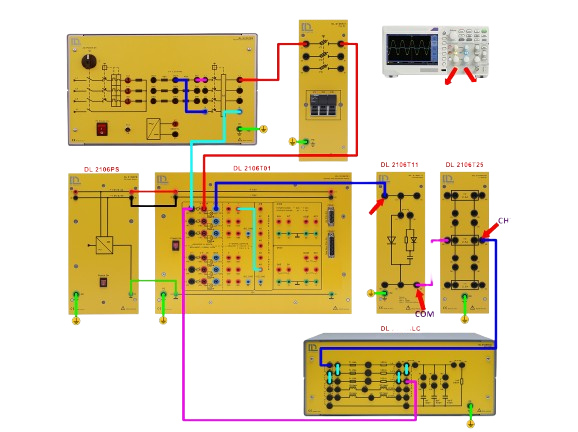

Experiment Manual Template
Introduction
- Provide Context
- Explain the Theory
- Review Previous Work
Objective
- Defines the Purpose
- Sets the Focus
- Clarifies the Scope
Components
The components and quantities used in this experiment are listed here. Links lead users to more information on component usage and specifications.
- 1 * DL 2501T01
- 2 * DL 2501T02
- 1 * DL 2501T03
Before Starting
This section guides users to prepare and setup environment and components, following safety guidelines.
- Check the power supply.
- Connect the circuit.
- etc
Wiring Guide
When users have difficulty wiring themselves, they can be helped here.

Experiment Procedures and Results
This section describes the steps followed and the outcomes observed during the experiment.
-
First, ...
-
Second, ...
- ...
-
For complex operations, videos will help to better understand.
Before Leaving
This section helps maintain a safe and organized laboratory environment and ensures that the lab is ready for the next user or session.